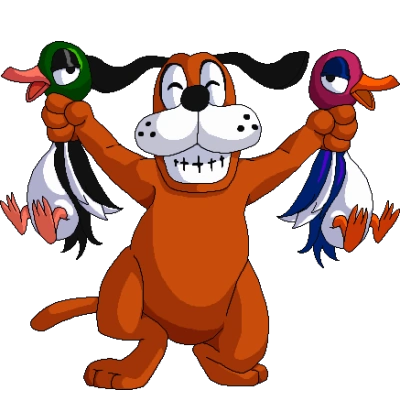

Grupo Emiciduck

Resumo
Fernando Pato da Silveira, conhecido pelo grupo música Emiciduck, é um rapper, cantor, letrista, compositor e pato brasileiro.
O nome "Emiciduck" é uma fusão das palavras "MC", "homicida" e pato. Devia as suas constantes vitórias nas batalhas de improvisação, seus amigos começaram a falar que Fernando era um "patassino", e que "matava" seus adversários, a gangue "Dogz", através de suas rimas.
Membro da Dogz posando com duas vítimas em mãos.
Mais tarde, o rapper criou também um acrônimo para o nome: E.M.I.C.I.D.U.C.K. (Enquanto Minha Imaginação Compuser Insanidades Domino Unanimemente* Cuarquer Koisa**)
Discografia
- Pra quem já mordeu um ganso por comida, até que eu cheguei longe...
- Sua pata ouve meu rep tamém
- Ducksídio
- Sobre patinhos, penas, pesadelos e migalhas de pão